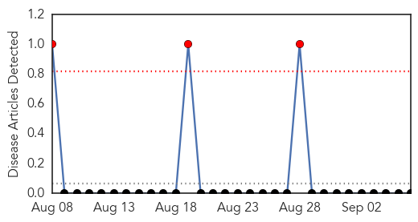
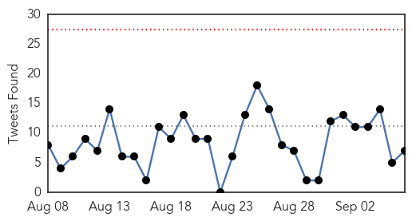
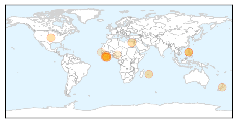
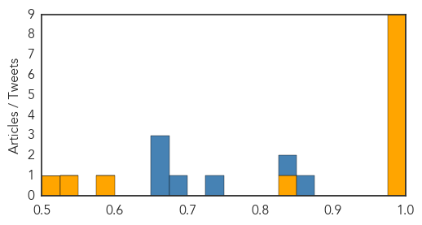

Yellow Fever
30-Day Web Trend
3 alerts, 0 warnings

30-Day Twitter Trend
0 alerts, 0 warnings

Article Locations

Article Confidences

Top Articles:
-
No articles found for Sep 06, 2015
Top Tweets:
-
No tweets found for Sep 06, 2015
Ebola
30-Day Web Trend
0 alerts, 0 warnings

30-Day Twitter Trend
0 alerts, 0 warnings

Article Locations
Article Confidences
Top Articles:
- 1.000
- Village in Sierra Leone quarantined after Ebola death
- 0.999
- Philippine monkeys infected with Ebola not lethal to humans
- 0.999
- Liberia declared Ebola-free for second time
- 0.999
- Aid groups take emergency steps against Ebola onslaught
- 0.999
- Liberia Is freed from Ebola Again, Remains on 'Heightened Surveillance'
- 0.999
- Philippine monkeys infected with Ebola not lethal to humans
- 0.998
- WHO declares end of Ebola outbreak in Liberia
- 0.996
- Ebola Outbreak – Isolation Ward in Souillac Hospital (Mauritius) Set Up
- 0.984
- Some West Africans Believe The Government Is Lying: They Say Ebola Scare Is A Scam
- 0.830
- Sierra Leone not being allowed to compete at Samoa 2015 "not what anyone wanted", CGF chief executive claims
- 0.586
- More heartbreak for Ebola survivor after baby boy dies
- 0.535
- Nigerian appointed first African member World Association for Medical Law
- 0.517
- One Doctor's Campaign To Pay Those Who Risked Their Lives
Top Tweets:
- 0.968
- Ebola virus and anti-viral therapies - Weekly Observer http://t.co/ZaFu9iNiCt ebola EVD
- 0.945
- Back with a bang of Ebola, Sierra Leone to vaccinate 200 people who came in ... - Benchmark Reporter http://t.co/iOYKjmU0UK ebola EVD
- 0.931
- Philippine monkeys infected with Ebola not lethal to humans - News24 http://t.co/HQRTlmB6tc ebola EVD
- 0.916
- 200 People To Be Vaccinated After Ebola Death - KRWG News22 http://t.co/PKiVNg2Dnh ebola EVD
- 0.914
- Baobab Forum: Ebola a threat to Africa and the world - eTurboNews http://t.co/pGKjhETqPl ebola EVD
- 0.898
- In Campaign To Prevent Ebola, A Vaccine For Apes Could Save Humans, Too - NPR http://t.co/gxKLeAqBK3 ebola EVD
- 0.877
- Liberia Is Free of Ebola Again, Remains on 'Heightened Surveillance' - Dispatch Times http://t.co/I0ANTe2RW5 ebola EVD
- 0.746
- Ebola virus and anti-viral therapies - Weekly Observer http://t.co/aGFF9RgmfX
- 0.687
- Back with a bang of Ebola, Sierra Leone to vaccinate 200 people who came in ... - Benchmark Reporter http://t.co/3WAgHHwJnu
- 0.527
- Philippine monkeys infected with Ebola not lethal to humans - News24 http://t.co/AKF6AX7CmV